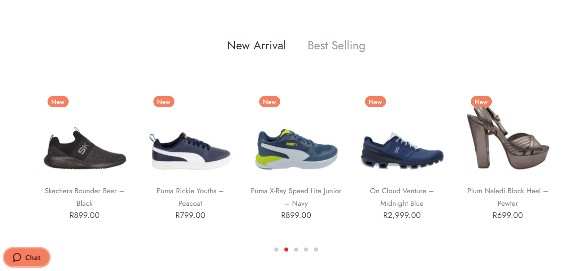

White Space and Clean Design
Brandz
Brandz.co.za This is one of my favourite design principles as I am a strong believer of simplicity. The page I chose is a webpage for online shopping. It is important for such pages to highlight the products that they are trying to sell. One way to achieve this is by making good use of white space and clear design in order to make the shopping experience straightforward for the user. There are no backgrounds that will dull out the key features of the products as illustrated in the above picture. The shape, colour and texture of the shoes, clothes, etc can be easily discerned. And if there is anything that the shopper would need to do, it is identified, such as viewing the shopping cart, it can be done without trouble. Truly a pleasurable shopping experience!
P.A.R.C - Alignment
Netflix
Netflix.com
Alignment is an important design principle in web design. Web design is not a deep abstract art and therefore alignment is needed to help the viewer navigate the webpage with their eyes. For example with the page I chose; Netflix, because each program available is aligned with the adjacent ones it forces the viewer to give each program equal consideration, and to spend their focus on each instead having to move their eyes up and down and sideways. They simply move in a straight line as though one is reading. As humans we typically dislike chaos and alignment is just one way to eliminate it in the browsing world.
P.A.R.C - Repetition
Property24
Property24.com
When designing a webpage, some items must repeat the same theme. The reason for this, is that it assists in navigating to the key elements that are important to take note of. For example in the webpage for Property24, a webpage for property to buy or rent, the two key important elements for the potential homebuyer is location and price. They are written using the same font colour, font size and within the same position. When looking for the price you look for the colour blue which is easy to find. Repetition helps web viewers to recognize content quickly without doing much finding.